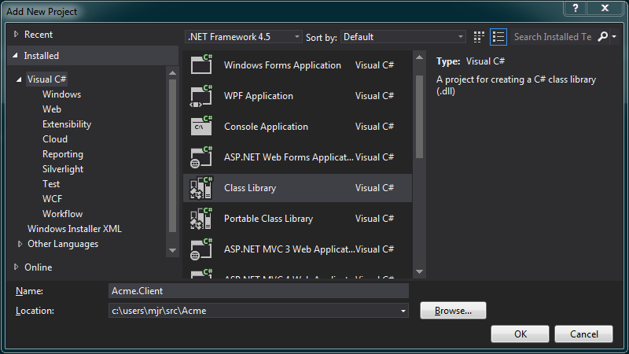
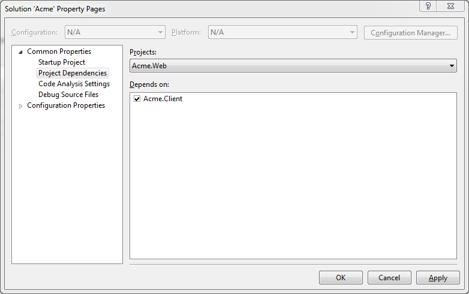

Walk-Through Creating an Acute-powered application
This walk-through aims to introduce you to Acute. It provides a step-by-step guide for guide for beginning an Acute application, and introduces a few key concepts and components along the way.
The corresponding code is contained in a Git repository: https://github.com/mjrichardson/acute-acme
Each step of the walk-through has a corresponding tag in the repo. To set the code to match step 1, for example, you would use:
git checkout -f step-1
Create Solution
We'll begin by creating an empty solution in Visual Studio. The following instructions assume Visual Studio 2012, but other versions should be close enough.
File -> New -> Project.
Choose Templates -> Other Project Types -> Visual Studio Solutions, and select Blank Solution.
For the name, we'll use Acme.

Create Web Project
Now we need to create a web project to serve our content.
Right Click on the solution.
Add --> New Project
Select Visual C# --> Web
We'll select ASP.NET MVC 4 Web Application. For the moment, an empty project would suffice, but later we will add some services using Web API controllers.
Name the project Acme.Web

When Visual Studio prompts you to select a template, choose Empty
Add Static HTML
To start, let's add a plain old static HTML page, called index.html to the Acme.Web project.
<html>
<head>
<title>Products - Acme Corporation</title>
</head>
<body>
<h1>Acme Corporation</h1>
<h2>Products</h2>
<div>
<h3>Giant Rubber-Band</h3>
<p>Perfect for tripping Road Runners</p>
</div>
</body>
</html>
We will progressively enhance this Acme product-catalog.
Create Acute Project
OK, now we get to the interesting stuff. Let's create our dynamic client application, powered by Acute.
Create a class-library project:
Right Click on the solution.
Add --> New Project
Select Visual C# --> Class Library
Name the project Acme.Client
Remove the generated Class1.cs file from the project.
Add Acute Nuget Package
Open the Package Manager Console (Tools -> Library Package Manager -> Package Manager Console
Enter Install-Package Acute -Project Acme.Client into the Package Manager Console
Once the package is installed, you need to unload and reload the Acute.Client project. This is due to a glitch with Visual Studio when mscorlib.dll is replaced with a custom version.
Copy Generated Javascript
When an Acute project is compiled, it produces a javascript file as output. This javascript will be needed by the web project. One way to achieve this, is to setup a post-build event in the web project.
First we need to ensure that Visual Studio always compile the Acute client project before the web project. Right-click the solution, and select Properties, then select Common Properties -> Project Dependencies. Select Acme.Web in the drop-down-list, and check Acute.Client.
And now we can add the post-build event. Right-click on the Acme.Web project, and select Properties, then Build Events. Add the following in the box labelled Post-build event command-line:
xcopy $(SolutionDir)Acme.Client\acute.min.js $(ProjectDir) /y xcopy $(SolutionDir)Acme.Client\bin\$(ConfigurationName)\Acme.Client.js $(ProjectDir) /y
The first line copies the Acute framework javascript file to the web project folder. The second copies the javascript produced by compiling the client project.
Create Client Application
Now we will create the class that represents our application.
Add a new class named AcmeApp to the project.
namespace Acme.Client
{
public class AcmeApp : Acute.App
{
}
}
Inheriting from Acute.App marks this class as being the application.
Create Controller
It's time to put the C in MVC.
See Concepts - Controllers for an understanding of the role controllers play in an Acute application.
But before that, let's create a class Product (because we're C# folks, and we like types).
namespace Acme.Client
{
[Serializable]
public class Product
{
public int Id { get; set; }
public string Name { get; set; }
public string Description { get; set; }
public decimal Price { get; set; }
}
}
Information: The reason for the Serializable attribute will be explained later.
Now create a ProductsController class.
using Acute;
namespace Acme.Client
{
public class ProductsController : Controller
{
public override void Control(dynamic scope)
{
scope.Products = new Product[]
{
new Product{
Id =1,
Name="Giant Rubber-Band",
Description = "Perfect for tripping Road Runners",
Price = 9.99m},
new Product{
Id =2,
Name="Earthquake Pills",
Description = "Why wait? Make your own earthquakes - loads of fun!",
Price = 11.00m },
new Product{
Id =3,
Name="Explosive Tennis Balls",
Description = "Tickle your friends! Surprise your opponent!",
Price = 25.40m }
};
}
}
}
Create Template
It's time for our static-HTML-content caterpillar to metamorphose into a template butterfly. And put the V in MVC.
Modify index.html like so:
<html acute-app="Acme.Client.AcmeApp">
<head>
<title>Products - Acme Corporation</title>
<script type="text/javascript" src="acute.min.js"></script>
<script type="text/javascript" src="Acme.Client.js"></script>
</head>
<body acute-controller="Acme.Client.ProductsController">
<h1>Acme Corporation</h1>
<h2>Products</h2>
<div acute-repeat="product in Products">
<h3>{{product.Name}} - {{product.Price | currency}}</h3>
<p>{{product.Description}}</p>
</div>
</body>
</html>
You'll notice we've added some acute-* attributes. These are directives. The specific ones used are, in order:
app- This directives identifies the root element of your Acute application.controller- Attaches a controller to the view. You can also attach controllers via routes, which we will see later.repeat- Instantiates a template once per item in a collection. We've replaced the static content inindex.htmlwith a repeat directive bound to the products list created by the controller.
Information: {{product.Price | current}} is an example of a filter.
At this point you should be able to run the application (ensure the web project is set as the start-up project). Navigate to index.html and view the list of products.
Add a Service
Our store won't be very successful if customers can't buy our products. Let's change that.
Add a new class to the Acme.Client project named CartService.cs:
using System.Collections.Generic;
namespace Acme.Client
{
public class CartService
{
private readonly Dictionary<string, int> _productQuantities = new Dictionary<string, int>();
public void AddToCart(string productName)
{
//if the dictionary does not contain the product
if (!_productQuantities.ContainsKey(productName))
{
//then add with a quantity of 1
_productQuantities.Add(productName, 1);
return;
}
//otherwise increment the quantity
_productQuantities[productName] = _productQuantities[productName] + 1;
}
public IDictionary<string, int> ProductsInCart { get { return _productQuantities; }}
}
}
This service will represent our 'shopping-cart'.
We will add a 'buy' button to our products.html.
<h2>Products</h2>
<div acute-repeat="product in Products">
<h3>{{product.Name}} - {{product.Price | currency}}</h3>
<p>{{product.Description}}</p>
<p><input type="button" value="Buy" acute-click="AddToCart(product.Name)"/></p>
</div>
<p><a href="#/cart">Shopping-Cart</a></p>
Note the acute-click directive on the button. When the button is clicked, this will cause the AddToCart() function to be called on the
scope. So let's take a look at the modified ProductsController.cs.
using System;
namespace Acme.Client
{
public class ProductsController : Acute.Controller
{
private readonly CartService _cartService;
public ProductsController(CartService cartService)
{
_cartService = cartService;
}
public override void Control(dynamic scope)
{
scope.Products = new Product[]
{
new Product
{
Id = 1,
Name = "Giant Rubber-Band",
Description = "Perfect for tripping Road Runners",
Price = 0.99m
},
new Product
{
Id = 2,
Name = "Earthquake Pills",
Description = "Why wait? Make your own earthquakes - loads of fun!",
Price = 10.00m
}
};
scope.AddToCart = (Action<string>)(productName => _cartService.AddToCart(productName));
}
}
}
The changes are:
- The constructor now accepts a
CartService. - The last line of the
Control()method assigns an action the the scope namedAddToCart.
Since there is little value in adding items to our cart if we can't view them, we will make cart.html dynamic. Create a new controller, CartController.cs.
using System.Linq;
namespace Acme.Client
{
public class CartController : Acute.Controller
{
private readonly CartService _cartService;
public CartController(CartService cartService)
{
_cartService = cartService;
}
public override void Control(dynamic scope)
{
scope.CartIsEmpty = !_cartService.ProductsInCart.Any();
scope.ProductQuantities = _cartService.ProductsInCart
.Select(x => new {Name = x.Key, Quantity = x.Value})
.ToList();
}
}
}
The CartController also accepts a CartService in it's constructor, and it uses it to provide CartIsEmpty and ProductQuantities members to the scope.
Interesting: The use of an anonymous-type in for the ProductQuantities. When it is only the HTML-template (which gives you no compile-time type-verification anyway), anonymous types can be a very handy way to reduce 'class-pollution'.
cart.html will be modified as so:
<h2>Shopping Cart</h2>
<div acute-repeat="productQuantity in ProductQuantities">
<p>{{productQuantity.Quantity}} x {{productQuantity.Name}}</p>
</div>
<div acute-show="CartIsEmpty">
<p>You have nothing in your cart...</p>
</div>
<a href="#/products">Continue shopping</a>
This now uses the acute-repeat directive to bind to the ProductQuantities collection (using the Quantity and Name properties of the anonymous-type used in the controller.
It also introduces the acute-show directive.
The final step is to modify AcmeApp.cs to register the CartService and associate the CartController with the appropriate route:
using Acute;
namespace Acme.Client
{
public class AcmeApp : Acute.App
{
public AcmeApp()
{
Service<CartService>();
}
protected override void ConfigureRoutes(RouteProvider routeProvider)
{
routeProvider.When("/cart", new RouteConfig<CartController> {TemplateUrl = "cart.html"});
routeProvider.Otherwise(new RouteConfig<ProductsController> {TemplateUrl = "products.html"});
}
}
}
Running the application now, you should see a 'buy' button below each product. Clicking one will add the chosen product to your cart.
Get data via HTTP
While useful for demos, generally we don't just create our data on the client. We would usually make a request to the server. This is where the IHttpService comes into play.
We will create a web-service which our client will consume. We will use Microsoft's Web API.
Create two classes in the Acme.Web project. In the Models folder create a class named Product:
namespace Acme.Web.Models
{
public class Product
{
public int Id { get; set; }
public string Name { get; set; }
public string Description { get; set; }
public decimal Price { get; set; }
}
}
And in the Controllers folder create a class, ProductsController:
using System.Collections.Generic;
using System.Web.Http;
using Acme.Web.Models;
namespace Acme.Web.Controllers
{
public class ProductsController : ApiController
{
[HttpGet]
public IEnumerable<Product> GetAllProducts()
{
return new[]
{
new Product
{
Id = 1,
Name = "Giant Rubber-Band",
Description = "Perfect for tripping Road Runners",
Price = 0.99m
},
new Product
{
Id = 2,
Name = "Earthquake Pills",
Description = "Why wait? Make your own earthquakes - loads of fun!",
Price = 10.00m
}
};
}
}
}
Yes, we now have Product and ProductController classes in both the client and server projects. For the controllers, this is fine: we are using MVC frameworks both client-side and server-side. For the Product model, if you dislike the idea of having the class in both projects, you could define the class in one, and set up a linked-file in the other.
The only other thing we have to modify in the web project, is to modify WebApiConfig.cs:
using System.Net.Http.Headers;
using System.Web.Http;
namespace Acme.Web
{
public static class WebApiConfig
{
public static void Register(HttpConfiguration config)
{
//return json by default
config.Formatters.JsonFormatter.SupportedMediaTypes.Add(new MediaTypeHeaderValue("text/html") );
config.Routes.MapHttpRoute(
name: "DefaultApi",
routeTemplate: "api/{controller}/{id}",
defaults: new { id = RouteParameter.Optional }
);
}
}
}
We added the line commented with 'return json by default'. And it does just that. Without it, XML serialization would be used unless specified by the request.
Now we have a web-service. To consume it, we create a class ProductService in the Acme.Client project.
using System.Collections.Generic;
using System.Threading.Tasks;
using Acute.Services;
namespace Acme.Client
{
public class ProductService
{
private readonly IHttp _http;
public ProductService(IHttp http)
{
_http = http;
}
public Task<IEnumerable<Product>> GetAllProducts()
{
return _http.GetAsync("/api/products")
.ContinueWith(result => result.Result.DataAs<IEnumerable<Product>>());
}
}
}
The ProductService accepts an IHttp as a constructor parameter.
Interesting: The invocation of the IHttp.GetAsync() method in GetAllProducts() is an example of making an asynchronous call. GetAsync() returns a Task.
The final step is to make the ProductsController (the client-side one) consume the ProductService.
using System;
namespace Acme.Client
{
public class ProductsController : Acute.Controller
{
private readonly CartService _cartService;
private readonly ProductService _productService;
public ProductsController(CartService cartService, ProductService productService)
{
_cartService = cartService;
_productService = productService;
}
public override void Control(dynamic scope)
{
_productService.GetAllProducts()
.ContinueWith(task => scope.Products = task.Result);
scope.AddToCart = (Action<string>)(productName => _cartService.AddToCart(productName));
}
}
}
And to register the ProductService in AcmeApp.
using Acute;
namespace Acme.Client
{
public class AcmeApp : Acute.App
{
public AcmeApp()
{
Service<CartService>();
Service<ProductService>();
}
protected override void ConfigureRoutes(RouteProvider routeProvider)
{
routeProvider.When("/cart", new RouteConfig<CartController> {TemplateUrl = "cart.html"});
routeProvider.Otherwise(new RouteConfig<ProductsController> {TemplateUrl = "products.html"});
}
}
}
Hopefully this walk-through has shown you how to start an Acute project, and introduced a few of the basic pieces.